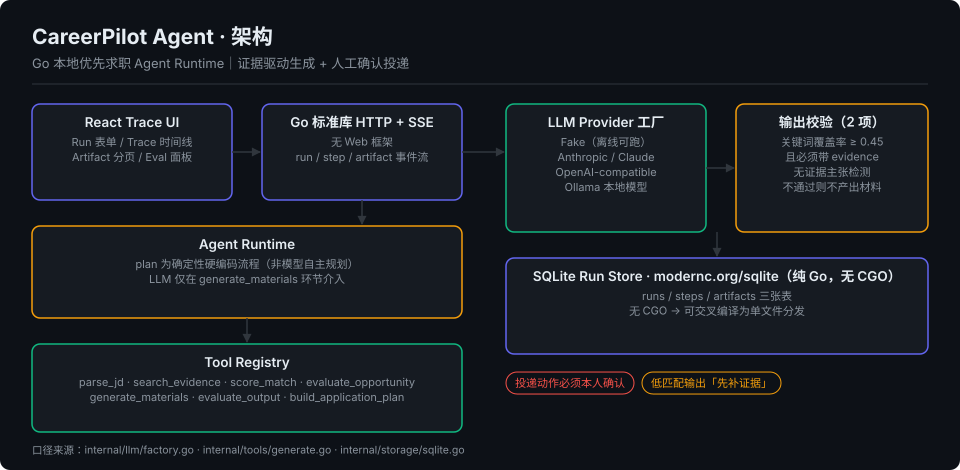

CareerPilot Agent
公开仓库Go 实现的本地优先求职 Agent Runtime — 工具注册、证据约束生成、SSE Trace、人工确认投递

- 依赖极简：Go 1.24，全部依赖只有官方
anthropics/anthropic-sdk-go与modernc.org/sqlite（纯 Go 实现，无 CGO，可交叉编译成单文件分发） - 确定性编排 + 局部 LLM：执行流程为硬编码的确定性流程，模型只在 generate_materials 环节介入，出问题时可以定位到具体步骤
- Provider 工厂四路可切：Fake / Anthropic / OpenAI-compatible / Ollama，Fake Provider 支持离线跑通全链路
- 证据约束生成：材料生成后做 2 项输出校验，分别是关键词覆盖率 ≥ 0.45 且必须带 evidence、无证据主张检测；低匹配岗位输出「不建议投递 / 先补证据」
- 可观测：Go 标准库 HTTP + SSE（无 Web 框架），runs / steps / artifacts 三张表，React Trace UI 展示时间线与 Artifact
- 负责任自动化：不自动提交申请、不发邮件、不伪造经历，投递动作必须本人确认